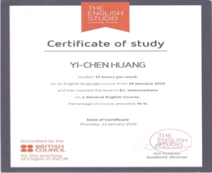

965TOEIC Listening & Reading
English Proficiency · TOEIC
多益 TOEIC 965
職場與國際溝通情境的英語能力證明。
語言、金融與生成式 AI 三個方向的認證。
職場與國際溝通情境的英語能力證明。
海外進修與工作的學術英語能力證明。

General English 課程，每週 15 小時，出席率 96%（2020 年 1 月）。
金融科技與數位金融的基礎知識。
信託業務專業能力測驗。
銀行內部控制與內部稽核基礎。
永續發展相關知識認證。
資策會生成式 AI 證照，以及 TQC 生成式 AI 應用與技術專業級。